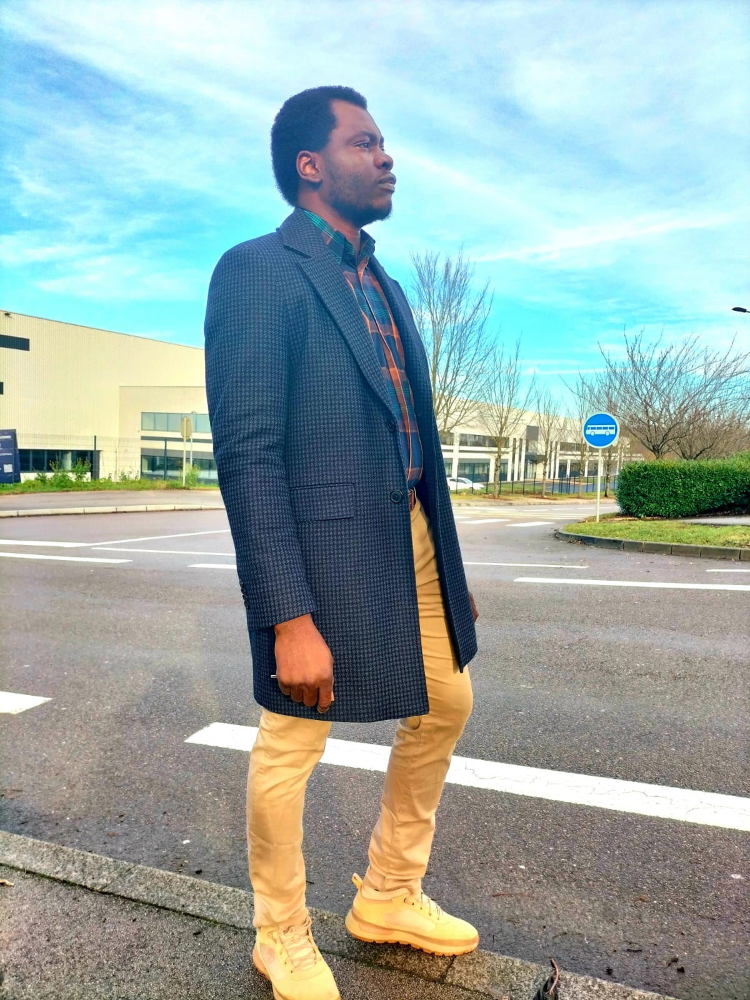

NWAFOR Chibundo
A Visionary in Mechatronics and Automation
From Nigeria to France: A Scholar's Pursuit
Chibundo’s journey began with a Bachelor’s degree in Electrical and Electronics Engineering from ANSU, Nigeria. Upon graduation, Chibundo gained invaluable industry experience in Nigeria. First, as an Electrical Engineer at VACC Technical Limited, where he specialized in industrial and house installations, ensuring safe and efficient electrical systems. He later worked at Ringardas Nigeria Limited as a Site Supervisor and Maintenance Officer, where he was responsible for maintaining and overseeing critical infrastructure projects. These roles provided him with a deep understanding of real-world engineering challenges, further fueling his desire to innovate. He had a hunger for more—more knowledge, more challenges, and more opportunities. His aspirations led him to France, where he pursued a Master’s degree in Control and Green Mechatronics at UBFC. There, he delved deeper into the world of automation, robotics, and control systems, realizing that he had found his true calling. Determined to push the boundaries of his expertise, he embarked on a PhD journey at the same institution, where he specialized in mechatronics, automation, and soft robotics. His research focused on the development of miniaturized continuum and micro/nano robotics, areas that hold vast potential for biomedical and industrial applications.
Bridging Innovation and Real-World Impact
Bridging innovation with real-world impact has been the defining theme of Chibundo’s journey. He has built his career on the conviction that the most advanced ideas in robotics should directly translate into tangible solutions. This philosophy is evident in each of his groundbreaking creations and each one a bold step across the gap between visionary concept and practical application.
.jpg) One of Chibundo’s earliest breakthroughs came in the form of a robot no larger than a fingertip, glinting under the laboratory lights. He named it Caturo, and it stands as the world’s smallest concentric tube robot and remarkably, the first ever made out of glass. Crafting a delicate machine from a material as fragile as glass was an audacious choice; yet that choice paid off in extraordinary ways. The glass micro-tubes of Caturo bend and flex with precision, achieving an unprecedented tight radius of curvature. In layman’s terms, it can navigate turns and corners that were once impossible for robots of its kind. Originally inspired by the demands of delicate surgery and microscale tasks, Caturo embodies Chibundo’s knack for turning unconventional materials into unprecedented tools.
One of Chibundo’s earliest breakthroughs came in the form of a robot no larger than a fingertip, glinting under the laboratory lights. He named it Caturo, and it stands as the world’s smallest concentric tube robot and remarkably, the first ever made out of glass. Crafting a delicate machine from a material as fragile as glass was an audacious choice; yet that choice paid off in extraordinary ways. The glass micro-tubes of Caturo bend and flex with precision, achieving an unprecedented tight radius of curvature. In layman’s terms, it can navigate turns and corners that were once impossible for robots of its kind. Originally inspired by the demands of delicate surgery and microscale tasks, Caturo embodies Chibundo’s knack for turning unconventional materials into unprecedented tools.
Buoyed by the success of Caturo, Chibundo set out to tackle an even more complex challenge. He envisioned a new kind of continuum robot – one that wasn’t a single flexible arm, but several working in concert, like a team of slender acrobats performing a perfectly synchronized routine. This idea, known as a parallel continuum robot was revolutionalized in terms of miniaturization and the flexible material backbone. Chibundo made it a reality, and once again he turned to an unlikely medium: glass optical fiber. Where others might see a simple strand of glass meant for transmitting light, he saw the backbone of a tiny robotic limb.
As his journey continued, Chibundo kept refining the interface between cutting-edge theory and down-to-earth utility. During his postdoctoral research, he focused on one of the fundamental building blocks of robotic design: the joint. Traditional robots rely on rigid joints or simple hinges for rovolute joint and ball and socket joint for spherical joint. In terms of miniaturized robots, the fabrication of spherical joint in small scale was a great challenge. Considering the paradigm shift to soft robotics, Chibundo proposed an optimized spherical soft joint for a new class of hybrid parallel robots. This spherical soft joint was a stroke of ingenious design: it could move freely in any direction like a ball-and-socket, but being made of soft, compliant material, it can also absorbed shocks and allowed smooth, continuous motions. Even while he was pioneering new designs, Chibundo also lent his expertise to re-imagining existing robotic systems. One notable example is MIGRIBOT, a celebrated miniature parallel robot originally created for high-precision micromanipulation tasks. But Chibundo saw room for improvement. With an eye toward making the robot even more practical and robust, he developed a monolithic, compliant-based version of MIGRIBOT.
What truly sets Chibundo apart is that his passion for robotics doesn’t end at the lab door. He is just as enthusiastic about hands-on, real-world engineering as he is about theoretical breakthroughs. In fact, one might find him after hours immersed in what he sees as a form of play that’s every bit as important as research: programming industrial controllers and building virtual factories. Chibundo has a knack for industrial automation. He enjoys programming Siemens PLCs (Programmable Logic Controllers) using the TIA Portal, the same software that runs assembly lines and power plants around the world.
A Vision for the Future
Each of these achievements, from a sub-millimeter glass robot to reimagined factory controls, forms a chapter in Chibundo’s larger narrative of bridging the gap between imagination and impact. His journey illustrates a rare balance between visionary innovation and practical application. By improving an already state-of-the-art robot, he underscored a key aspect of his mission: not only inventing new technologies, but also elevating existing ones so they can have greater impact in practical settings.
As he continues to push the frontiers of robotics, one can’t help but feel inspired by the world of possibilities he’s opening up, a world where even the smallest robot can make a giant difference, and where the line between the future and the present grows ever thinner thanks to innovators like him. Feel free to send him a message/comment in the message box below.
Click here for my CV (English version)
Click here for my CV (French version)